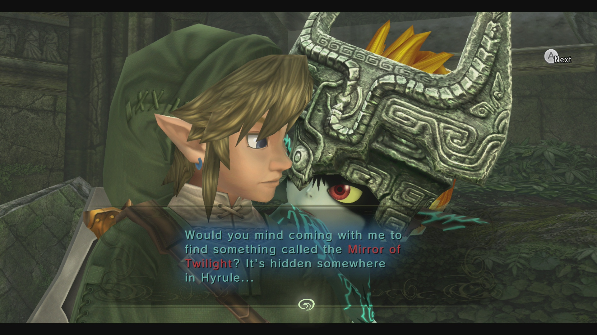

Top 6 Best Zelda Games of All Time!
Welcome to my website about the best Zelda games ever made, ranked! If you want to see a gameplay trailer for any game, just click on the dropdown menu labeled Games and select your game. For more information about the Zelda game series click on the Wiki. Have fun reading!
-
The Legend of Zelda - A Link to the Past
The Legend of Zelda: A Link to the Past is the third main installment of The Legend of Zelda series, and the first and only one for the Super Nintendo Entertainment System. After the side-scrolling and more RPG-like gameplay of The Adventure of Link, A Link to the Past was a return to the overhead view and gameplay style of The Legend of Zelda. It introduced the concept of two different worlds (one dark, one light), which was revisited to an extent in its console successor Ocarina of Time with two time periods rather than dark and light worlds. A Link to the Past was re-released in 2002, on the Game Boy Advance system, sharing a cartridge with Four Swords.
-
The Legend of Zelda - The Minish Cap
The Legend of Zelda: The Minish Cap is the twelfth main installment of The Legend of Zelda series. It was released for the Game Boy Advance in 2004. Like most other titles in the series, The Minish Cap features the fully explorable land of Hyrule, although it can be viewed from the eyes of a human or the eyes of a Minish, a race of tiny people and an alternate form that Link can transform into. The game is the first in the story surrounding the Four Sword and features Vaati as the game's main villain. However, unlike the multiplayer focus of the other games in the series, The Minish Cap retains the original form of exploration and dungeons as seen in A Link to the Past, Oracle of Seasons, and Oracle of Ages, as well as returning characters and game mechanics such as Malon and the Spin Attack. New features include fusing Kinstones and shrinking to the size of a Minish.
-
The Legend of Zelda - Twilight Princess
The Legend of Zelda: Twilight Princess is the thirteenth main installment of The Legend of Zelda series, released for both the Nintendo GameCube and Wii. It was highly anticipated by many members of the gaming community and was regarded as finally fulfilling the dreams of those who wanted a much more realistic and mature Zelda game, as seen in the SpaceWorld 2000 GameCube Tech Demo. It is the first, and so far only, Zelda game to be rated T by ESRB, and the first to be rated 12+ by PEGI, with rating descriptors including "animated blood" and "fantasy violence". The game is also notable for being the first console Zelda title released in the United States before Japan, as the Wii version was released in America on November 19, 2006, whereas the Japanese versions were released on December 2. Because of this, Twilight Princess was one of the launch titles for the Wii alongside Wii Sports in the United States.
-
The Legend of Zelda - Phantom Hourglass
The Legend of Zelda: Phantom Hourglass is the fourteenth main installment of The Legend of Zelda series. It is the first The Legend of Zelda game for the Nintendo DS and a direct sequel to The Wind Waker. The game's story follows that of The Wind Waker, focusing on series protagonist Link's journey to save his friend Tetra from the story's antagonist, Bellum, with the help of Captain Linebeck and his ship, the S.S. Linebeck. The development team for Phantom Hourglass has many returning developers from Four Swords Adventures, many of whom, in turn, were chosen from those who worked on A Link to the Past.
-
The Legend of Zelda - A Link Between Worlds
The Legend of Zelda: A Link Between Worlds is the seventeenth main installment of The Legend of Zelda series. It is the first Zelda title developed specifically for the Nintendo 3DS and an indirect sequel to A Link to the Past, featuring the same version of Hyrule but new characters and gameplay elements. The title was released on November 22, 2013, in North America and Europe, November 23 in Australia, and December 26 in Japan. The Korean version was released the following year, on June 21, 2014. The story is set many years after the events of A Link to the Past. Players assume the role of a young adventurer named Link, who sets out to restore peace to the kingdom of Hyrule after the evil sorcerer Yuga captures Princess Zelda and escapes through a rift into the parallel world of Lorule. Yuga desires to kidnap the Seven Sages and use their power to resurrect the demon king Ganon. Shortly into his adventure, Link is granted the ability to merge into walls as a 2D painting after obtaining a magic bracelet from the eccentric merchant Ravio, which allows him to reach previously inaccessible areas and travel between the worlds of Hyrule and Lorule.
-
The Legend of Zelda - Breath of the Wild

Breath of the Wild is the 19th game in the series. Link awakens from a 100 year sleep and is tasked with destroying Calamity Ganon before the world is destroyed. The game returns to the original The Legend of Zelda concept of a more open-world adventure, where Link is free to explore the world in any direction at any given moment. Major dungeons found in previous games have been replaced with four smaller Divine Beasts and numerous small Ancient Shrine scattered throughout the land. Several new elements were introduced as well, such as weapon durability, taming and registering wild horses, and abilities like Shield Surfing and Perfect Dodge and Guard. The game was released simultaneously for the Wii U and Nintendo Switch on March 3, 2017.